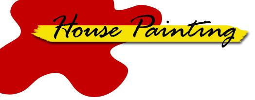

ABOVE, FROM LEFT: Use a wire hook to hang the bucket of paint on your ladder. If you tote your equipment in boxes... you can stand on the containers as you work! Haul your ladders on a car-top ladder... and don't forget a red flag on the back if they're longer than the vehicle.